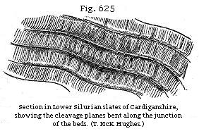
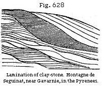

The Student’s Elements of Geology
Definition of slaty Cleavage and Joints. — Supposed Causes of these Structures. — Crystalline Theory of Cleavage. — Mechanical Theory of Cleavage. — Condensation and Elongation of slate Rocks by lateral Pressure. — Lamination of some volcanic Rocks due to Motion. — Whether the Foliation of the crystalline Schists be usually parallel with the original Planes of Stratification. — Examples in Norway and Scotland. — Causes of Irregularity in the Planes of Foliation.
We have already seen that chemical forces of great intensity have frequently acted upon sedimentary and fossiliferous strata long subsequently to their consolidation, and we may next inquire whether the component minerals of the altered rocks usually arrange themselves in planes parallel to the original planes of stratification, or whether, after crystallisation, they more commonly take up a different position.
In order to estimate fairly the merits of this question, we must first define what is meant by the terms cleavage and foliation. There are four distinct forms of structure exhibited in rocks, namely, stratification, joints, slaty cleavage, and foliation; and all these must have different names, even though there be cases where it is impossible, after carefully studying the appearances, to decide upon the class to which they belong.
Slaty Cleavage.—Professor Sedgwick, whose essay “On the Structure of large Mineral Masses” first cleared the way towards a better understanding of this difficult subject, observes, that joints are distinguishable from lines of slaty cleavage in this, that the rock intervening between two joints has no tendency to cleave in a direction parallel to the planes of the joints, whereas a rock is capable of indefinite subdivision in the direction of its slaty cleavage. In cases where the strata are curved, the planes of cleavage are still perfectly parallel. This has been observed in the slate rocks of part of Wales (see Fig. 624), which consists of a hard greenish slate. The true bedding is there indicated by a number of parallel stripes, some of a lighter and some of a darker colour than the general mass. Such stripes are found to be parallel to the true planes of stratification, wherever these are manifested by ripple-mark or by beds
containing peculiar organic remains. Some of the contorted strata are of a coarse mechanical structure, alternating with fine-grained crystalline chloritic slates, in which case the same slaty cleavage extends through the coarser and finer beds, though it is brought out in greater perfection in proportion as the materials of the rock are fine and homogeneous. It is only when these are very coarse that the cleavage planes entirely vanish. In the Welsh hills these planes are usually inclined at a very considerable angle to the planes of the strata, the average angle being as much as from 30° to 40°. Sometimes the cleavage planes dip towards the same point of the compass as those of stratification, but often to opposite points.* The cleavage, as represented in Fig. 624, is generally constant over the whole of any area affected by one great set of disturbances, as if the same lateral pressure which caused the crumpling up of the rock along parallel, anticlinal, and synclinal axes caused also the cleavage.
Mr. T. McK. Hughes remarks, that where a rough cleavage cuts flag-stones at a considerable angle to the planes of stratification, the rock often splits into large slabs, across which the lines of bedding are frequently seen, but when the cleavage planes approach within about 15° of stratification, the rock is apt to split along the lines of bedding. He has also called my attention to the fact that subsequent movements in a cleaved rock sometimes drag and bend the cleavage planes along the junction of the beds in the manner indicated in Fig. 625.
Jointed Structure.—In regard to joints, they are natural
* Geol. Trans., 2nd series, vol. iii, p. 461.
fissures which often traverse rocks in straight and well-determined lines. They afford to the quarryman, as Sir R. Murchison observes, when speaking of the phenomenon, as exhibited in Shropshire and the neighbouring counties, the greatest aid in the extraction of blocks of stone; and, if a sufficient number cross each other, the whole mass of rock is split into symmetrical blocks. The faces of the joints are for the most part smoother and more regular than the surfaces of true strata. The joints are straight-cut chinks, sometimes slightly open, and often passing, not only through layers of successive deposition, but also through balls of limestone or other matter which have been formed by concretionary action since the original accumulation of the strata. Such joints, therefore, must often have resulted from one of the last changes superinduced upon sedimentary deposits.*
In Fig. 626 the flat-surfaces of rock, A, B, C, represent exposed faces of joints, to which the walls of other joints, J J, are parallel. S S are the lines of stratification; D D are lines of slaty cleavage, which intersect the rock at a considerable angle to the planes of stratification.
In the Swiss and Savoy Alps, as Mr. Bakewell has remarked, enormous masses of limestone are cut through so regularly by nearly vertical partings, and these joints are often so much more conspicuous than the seams of stratification, that an inexperienced observer will almost inevitably confound them, and suppose the strata to be perpendicular in places where in fact they are almost horizontal.†
Now such joints are supposed to be analogous to the partings which separate volcanic and Plutonic rocks into cuboidal and prismatic masses. On a small scale we see clay and starch when dry split into similar shapes; this is often caused by simple contraction, whether the shrinking be due
* Silurian System, p. 246.
† Introduction to Geology, chap. iv.
to the evaporation of water, or to a change of temperature. It is well known that many sandstones and other rocks expand by the application of moderate degrees of heat, and then contract again on cooling; and there can be no doubt that large portions of the earth’s crust have, in the course of past ages, been subjected again and again to very different degrees of heat and cold. These alternations of temperature have probably contributed largely to the production of joints in rocks.
In many countries where masses of basalt rest on sandstone, the aqueous rock has, for the distance of several feet from the point of junction, assumed a columnar structure similar to that of the trap. In like manner some hearth-stones, after exposure to the heat of a furnace without being melted, have become prismatic. Certain crystals also acquire by the application of heat a new internal arrangement, so as to break in a new direction, their external form remaining unaltered.
Crystalline Theory of Cleavage.—Professor Sedgwick, speaking of the planes of slaty cleavage, where they are decidedly distinct from those of sedimentary deposition, declared, in the essay before alluded to, his opinion that no retreat of parts, no contraction in the dimensions of rocks in passing to a solid state, can account for the phenomenon. He accordingly referred it to crystalline or polar forces acting simultaneously, and somewhat uniformly, in given directions, on large masses having a homogeneous composition.
Sir John Herschel, in allusion to slaty cleavage, has suggested that “if rocks have been so heated as to allow a commencement of crystallisation—that is to say, if they have been heated to a point at which the particles can begin to move among themselves, or at least on their own axes, some general law must then determine the position in which these particles will rest on cooling. Probably, that position will have some relation to the direction in which the heat escapes. Now, when all, or a majority of particles of the same nature have a general tendency to one position, that must of course determine a cleavage-plane. Thus we see the infinitesimal crystals of fresh-precipitated sulphate of barytes, and some other such bodies, arrange themselves alike in the fluid in which they float; so as, when stirred, all to glance with one light, and give the appearance of silky filaments. Some sorts of soap, in which insoluble margarates* exist,
* Margaric acid is an oleaginous acid, formed from different animal and vegetable fatty substances. A margarate is a compound of this acid with soda, potash, or some other base, and is so named from its pearly lustre.
exhibit the same phenomenon when mixed with water; and what occurs in our experiments on a minute scale may occur in nature on a great one.”*
Mechanical Theory of Cleavage.—Professor Phillips has remarked that in some slaty rocks the form of the outline of fossil shells and trilobites has been much changed by distortion, which has taken place in a longitudinal, transverse, or oblique direction. This change, he adds, seems to be the result of a “creeping movement” of the particles of the rock along the planes of cleavage, its direction being always uniform over the same tract of country, and its amount in space being sometimes measurable, and being as much as a quarter or even half an inch. The hard shells are not affected, but only those which are thin.† Mr. D. Sharpe, following up the same line of inquiry, came to the conclusion that the present distorted forms of the shells in certain British slate rocks may be accounted for by supposing that the rocks in which they are imbedded have undergone compression in a direction perpendicular to the planes of cleavage, and a corresponding expansion in the direction of the dip of the cleavage.‡
Subsequently (1853) Mr. Sorby demonstrated the great extent to which this mechanical theory is applicable to the slate rocks of North Wales and Devonshire,§ districts where the amount of change in dimensions can be tested and measured by comparing the different effects exerted by lateral pressure on alternating beds of finer and coarser materials. Thus, for example, in Fig. 627 it will be seen that the sandy bed d f, which has offered greater resistance, has been sharply contorted, while the fine-grained strata, a, b, c, have remained comparatively unbent. The points d and f in the stratum d f must have been originally four times as far apart as they are now. They have been forced so much nearer to each other, partly by bending, and partly by becoming elongated in the direction of what may be called the longer axes of their contortions, and lastly, to a certain small amount, by condensation. The chief result has obviously been due to the bending; but, in proof of elongation, it will be observed that the thickness of the bed d f is now about four times greater in those parts lying in the main direction of the flexures than in a plane
* Letter to the author, dated Cape of Good Hope,
Feb. 20, 1836.
† Report, Brit. Assoc., Cork, 1843, Sect. p. 60.
‡ Quart. Geol. Journ., vol. iii, p. 87, 1847.
§ On the Origin of Slaty Cleavage, by H. C. Sorby, Edin. New
Phil. Journ., 1853, vol. lv, p. 137.
perpendicular to them; and the same bed exhibits cleavage planes in the direction of the greatest movement, although they are much fewer than in the slaty strata above and below.
Above the sandy bed d f, the stratum c is somewhat disturbed, while the next bed, b, is much less so, and a not at all; yet all these beds, c, b, and a, must have undergone an equal amount of pressure with d, the points a and g having approximated as much towards each other as have d and f. The same phenomena are also repeated in the beds below d, and might have been shown, had the section been extended downward. Hence it appears that the finer beds have been squeezed into a fourth of the space they previously occupied, partly by condensation, or the closer packing of their ultimate particles (which has given rise to the great specific gravity of such slates), and partly by elongation in the line of the dip of the cleavage, of which the general direction is perpendicular to that of the pressure. “These and numerous other cases in North Devon are analogous,” says Mr. Sorby, “to what would occur if a strip of paper were included in a mass of some soft plastic material which would readily change its dimensions. If the whole were then compressed in the direction of the length of the strip of paper, it would be bent and puckered up into contortions, while the plastic material would readily change its dimensions without undergoing such contortions; and the difference in distance of the ends of the paper, as measured in a direct line or along it, would indicate the change in the dimensions of the plastic material.”
By microscopic examination of minute crystals, and by
other observations, Mr. Sorby has come to the conclusion that the absolute condensation of the slate rocks amounts upon an average to about one half their original volume. Most of the scales of mica occurring in certain slates examined by Mr. Sorby lie in the plane of cleavage; whereas in a similar rock not exhibiting cleavage they lie with their longer axes in all directions. May not their position in the slates have been determined by the movement of elongation before alluded to? To illustrate this theory some scales of oxide of iron were mixed with soft pipe-clay in such a manner that they inclined in all directions. The dimensions of the mass were then changed artificially to a similar extent to what has occurred in slate rocks, and the pipe-clay was then dried and baked. When it was afterwards rubbed to a flat surface perpendicular to the pressure and in the line of elongation, or in a plane corresponding to that of the dip of cleavage, the particles were found to have become arranged in the same manner as in natural slates, and the mass admitted of easy fracture into thin flat pieces in the plane alluded to, whereas it would not yield in that perpendicular to the cleavage.*
Dr. Tyndall, when commenting in 1856 on Mr. Sorby’s experiments, observed that pressure alone is sufficient to produce cleavage, and that the intervention of plates of mica or scales of oxide of iron, or any other substances having flat surfaces, is quite unnecessary. In proof of this he showed experimentally that a mass of “pure white wax, after having been submitted to great pressure, exhibited a cleavage more clean than that of any slate-rock, splitting into laminæ of surpassing tenuity.”† He remarks that every mass of clay or mud is divided and subdivided by surfaces among which the cohesion is comparatively small. On being subjected to pressure, such masses yield and spread out in the direction of least resistance, small nodules become converted into laminæ separated from each other by surfaces of weak cohesion, and the result is that the mass cleaves at right angles to the line in which the pressure is exerted. In further illustration of this, Mr. Hughes remarks that “concretions which in the undisturbed beds have their longer axes parallel to the bedding are, where the rock is much cleaved, frequently found flattened laterally, so as to have their longer axes parallel to the cleavage planes, and at a considerable angle, even right angles, to their former position.”
Mr. Darwin attributes the lamination and fissile structure
* Sorby, as cited above, p. 741, note.
† Tyndall, View of the Cleavage of Crystals and Slate
rocks.
of volcanic rocks of the trachytic series, including some obsidians in Ascension, Mexico, and elsewhere, to their having moved when liquid in the direction of the laminæ. The zones consist sometimes of layers of air-cells drawn out and lengthened in the supposed direction of the moving mass.
Foliation of Crystalline Schists.—After studying, in 1835, the crystalline rocks of South America, Mr. Darwin proposed the term foliation for the laminæ or plates into which gneiss, mica-schist, and other crystalline rocks are divided. Cleavage, he observes, may be applied to those divisional planes which render a rock fissile, although it may appear to the eye quite or nearly homogeneous. Foliation may be used for those alternating layers or plates of different mineralogical nature of which gneiss and other metamorphic schists are composed.
That the planes of foliation of the crystalline schists in Norway accord very generally with those of original stratification is a conclusion long since espoused by Keilhau.† Numerous observations made by Mr. David Forbes in the same country (the best probably in Europe for studying such phenomena on a grand scale) confirm Keilhau’s opinion. In Scotland, also, Mr. D. Forbes has pointed out a striking case where the foliation is identical with the lines of stratification in rocks well seen near Crianlorich on the road to Tyndrum, about eight miles from Inverarnon, in Perthshire. There is in that locality a blue limestone foliated by the intercalation of small plates of white mica, so that the rock is often scarcely distinguishable in aspect from gneiss or mica-schist. The stratification is shown by the large beds and coloured bands of limestone all dipping, like the folia, at an angle of 32° N.E.‡ In stratified formations of every age we see layers of siliceous sand with or without mica, alternating with clay, with fragments of shells or corals, or with seams of vegetable matter, and we should expect the mutual attraction of like particles to favour the crystallisation of the quartz, or mica, or feldspar, or carbonate of lime, along the planes of original deposition, rather than in planes placed at angles of 20 or 40 degrees to those of stratification.
We have seen how much the original planes of stratification may be interfered with or even obliterated by concretionary action in deposits still retaining their fossils, as in the case of the magnesian limestone (see p. 63). Hence we must expect to be frequently baffled when we attempt to decide
* Darwin, Volcanic Islands, pp. 69, 70.
† Norske Mag. Naturvidsk., vol. i, p. 71.
‡ Memoir read before the Geol. Soc. London, Jan. 31,
1855.
whether the foliation does or does not accord with that arrangement which gravitation, combined with current-action, imparted to a deposit from water. Moreover, when we look for stratification in crystalline rocks, we must be on our guard not to expect too much regularity. The occurrence of wedge-shaped masses, such as belong to coarse sand and pebbles—diagonal lamination (p. 42)—ripple-marked, unconformable stratification,—the fantastic folds produced by lateral pressure—faults of various width—intrusive dikes of trap—organic bodies of diversified shapes, and other causes of unevenness in the planes of deposition, both on the small and on the large scale, will interfere with parallelism. If complex and enigmatical appearances did not present themselves, it would be a serious objection to the metamorphic theory. Mr. Sorby has shown that the peculiar structure belonging to ripple-marked sands, or that which is generated when ripples are formed during the deposition of the materials, is distinctly recognisable in many varieties of mica-schists in Scotland.*
In Fig. 628 I have represented carefully the lamination of a coarse argillaceous schist which I examined in 1830 in the Pyrenees. In part it approaches in character to a green and blue roofing-slate, while part is extremely quartzose, the whole mass passing downward into micaceous schist. The vertical section here exhibited is about three feet in height, and the layers are sometimes so thin that fifty may be counted in the thickness of an inch. Some of them consist of pure quartz. There is a resemblance in such cases to the diagonal lamination which we see in sedimentary rocks, even though the layers of quartz and of mica, or of feldspar and other minerals, may be more distinct in alternating folia than they were originally.
* H. C. Sorby, Quart. Geol. Journ., vol. xix., p. 401.